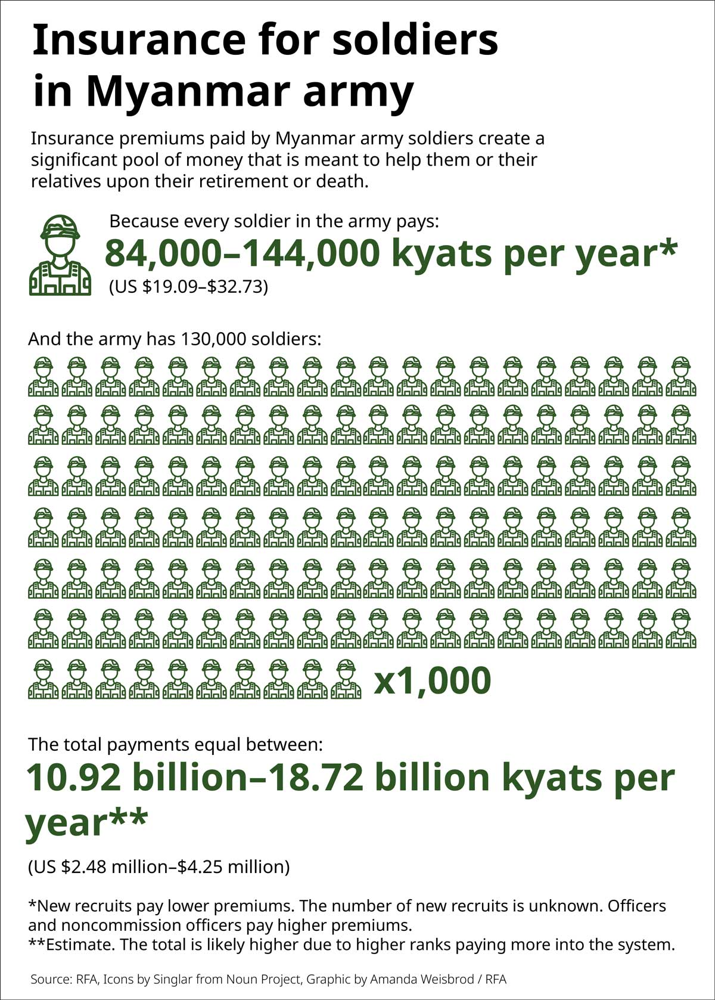

In the Myanmar military,
life insurance for soldiers isn’t paying out
Soldiers pay into a plan run by the son of Myanmar’s coup leader, and bereaved families say they receive nothing.
Part of a three-story series to mark the fourth anniversary of Myanmar’s 2021 coup, looking at how the military treats its own soldiers.
The 2021 coup that plunged Myanmar into civil war has been a disaster for its military. It has lost control of much of the country, and thousands of soldiers have been killed or wounded in the face of rebel advances.
That’s also made it one of the riskiest places on Earth to enlist as a soldier – one where life insurance sounds like a sensible idea to those on the front line and a risky business for those offering it.
Not so Myanmar, where members of the armed forces are required to take out life insurance provided by a company run by the son of army chief and coup leader Senior Gen. Min Aung Hlaing.
The scheme is operated by Aung Myint Moh Min Insurance, or AMMMI, established in June 2013, when Myanmar opened up life insurance to the private sector. The company, however, is believed to be a subsidiary of Myanmar Economic Corporation, one of the military’s two sprawling business conglomerates.
A U.N. report in 2019 said the top general’s only son Aung Pyae Sone, 40, holds a “significant stake” in AMMMI. The U.S. government sanctioned Aung Pyae Sone in March 2021 for profiting from his connection to the coup leader. His business interests extend to telecommunications, real estate and the health sector.
Families of soldiers killed in the past year tell Radio Free Asia that they have been unable to get a payout from the life insurance that the U.N. report described as “required” for all personnel in the Tatmadaw, as the military is known in Myanmar. AMMMI also offers policies to government employees and the public.
RFA contacted the company for comment. It said that life insurance payouts are processed within a few days of a policyholder’s death.
"It should surprise nobody that control of the military life insurance policies for Myanmar's army rests with the son of Senior Gen. Min Aung Hlaing. Corruption in Myanmar's military flows from the top down,” said political analyst Jonah Blank from the Rand Corporation, a think tank partially funded by the U.S. government.
"Corruption permeates every rank, with profits flowing straight to the top,” he told RFA.
‘We protect the family’
Former Maj. Tin Lin Aung, who defected from the military after the coup, said a service member starts paying premiums with their first paycheck, and the policy's beneficiary is their spouse or other nominated family members.
Ei Ei Aung, an independent online insurance agent, said that when life insurance was operated by state-run Myanma Insurance soldiers would be fully covered in the event of their death as soon as they submitted their first premium.
Things became more flaky when Aung Myint Moh Min Insurance, whose motto is “We Protect the Family,” took control.
The first high-profile sign of the company’s unwillingness came in 2017, when a military transport plane crashed in bad weather offshore near the southern city of Dawei killing 122 people.
The first high-profile sign of the company’s unwillingness to pay out came in 2017, when a military transport plane crashed in bad weather offshore near the southern city of Dawei killing 122 people.
It was one of the worst aviation disasters in the nation’s history. Among the dead was a captain travelling to see his wife, who was about to give birth.
“Aung Myint Moh Min Company claimed that only 30% of the premium had been paid and therefore refused to pay the full life insurance amount. They offered to refund only the amount that had been paid,” Tin Ling Aung said.
When a colleague of the dead captain shared online a photo of the rejection letter from the insurer, it was widely circulated, drawing attention to how the scheme operated, and reportedly causing trouble for the captain’s colleague who was redeployed to the frontline.
Little information
There is scant public information about the company, but a university thesis supported by the AMMMI and submitted to Yangon University’s Economics Department in 2019 outlined the company’s revenue stream and payouts in its first five years of operation.
The thesis, "Customer Perception on Life Insurance Service of Aung Myint Moh Min Insurance," written by Min Aung, showed that army personnel life insurance was by far its biggest earner and that claim payouts in 2018-19 amounted to less than 7% of premiums paid.

Aung Myint Moh Min has a variety of policies catering for different ranks. Payouts on maturation of a policy or the death of the policyholder start as low as $110. Those cost the equivalent of $1.55 to $2.65 per month, depending on the lifespan of the policy. There are policies offering higher payouts with higher monthly premiums.
RFA could not find publicly available financial information about the current operations of AMMMI, but if the number of military personnel is estimated at 130,000 and each person contributed $2 a month in premiums, the Aung Myint Moh Min Insurance company would be raking in more than $3 million a year in life insurance premiums.
Concerns over the life insurance have intensified in the past four years since the coup, as conflict has escalated across Myanmar, and the military’s casualties have mounted.
Insurance agent Ei Ei Aung told RFA there are many ways the company avoids paying out.
“In the military, there are numerous cases where families of deceased soldiers fail to claim compensation,” she said.
“This may be due to family members being unaware of the soldier’s death, lack of notification from responsible superiors, or insufficient communication. As a result, many compensation claims go unprocessed and are ultimately lost,” she said.
Documents lost
One widow, Hla Khin, told RFA about her attempts to secure a military pension or life insurance payment for her husband, Sgt. Min Din who died in a battle in Shan state in June. She discovered after her husband died that applications for any benefit had to be made in person where the soldier last served. The battalion in which he had served suffered major losses.
“There was nobody in Battalion 501 as many people died. Almost all documents have been lost as some office staff moved out, some died and some are still missing,” she said.
Six months after Min Din was killed, the paperwork has now been filed. Hla Khin is waiting for a response.
Tin Lin Aung describes how the process works.
“If an entire battalion is captured by resistance forces, there are significant challenges. For single soldiers, their parents can still apply for the insurance, but this is little more than a hope because, in many cases, the battalion’s office and records are gone, and the military commander responsible for the claim may also have been captured. In such cases, Aung Myint Moh Min Company seizes the life insurance for the entire battalion,” he said.
The firm would also have pocketed the payments of the thousands of soldiers who have defected. Two opposition-aligned groups, People’s Embrace and People’s Goal, estimate that nearly 15,000 soldiers and police have defected – at the risk of the death penalty if caught – in the past two years.
Capt. Zin Yaw defected from the military a month after the February 2021 coup. He provided RFA with a copy of his August 2020 pay slip, which shows the 25,000 kyat ($5.55) deduction for life insurance taken from his pay.
In 2017, he redeemed his first life insurance policy after it reached maturity. He got nothing out from the next policy he took out because he defected. He also confirmed that families of fallen soldiers are being denied money.
“If they couldn’t show photos and any proof of the death, then both the army and the insurance company put them on the missing list, not in the dead list,” he said.
Ei Ei Aung said that claims have to be made within one month of death, although it can take much longer for families to get word that a soldier has died. If there’s no notification after a year, any claim for compensation is forfeited.
Missing out
Relatives of Min Khant Kyaw, a 23-year-old from Ayeyarwady region, learned from authorities in November of his death in the military, without saying how, when or where he died. It was the first time the family had learned he was even in the military. Now they say they don’t know how to claim any benefits for him as they have no idea which unit he fought in.
“The key issue is that the person connected to the deceased must be aware of the death and notify the insurance company,” Ei Ei Aung said.
“If a death goes unreported, the family of the deceased misses out on significant rights as well. As a result, even though it is undeniable that these people have died, many do not receive the benefits they are due.”
This is not the only benefit that the junta or its associates are accused of pocketing.